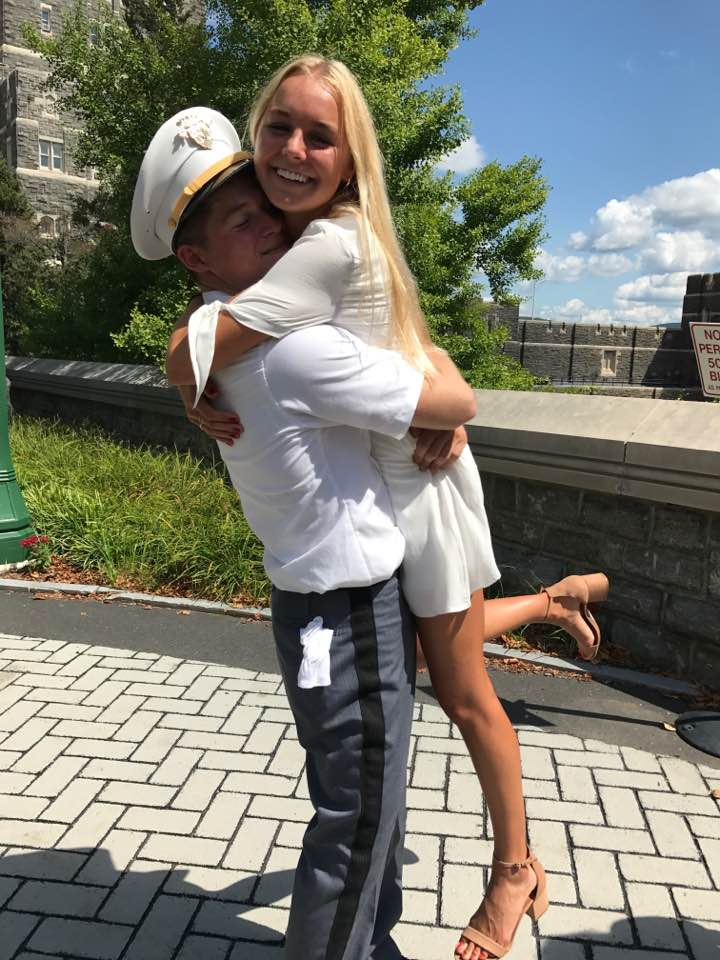

CDT Barnes' Content Area
This is a picture of me on A-Day with my girlfriend, Peyton!
Welcome to my WebPage!
My Philosophy of Life
I believe in finding your talent in life and utilizing it to your best ability. I believe we should work to serve our fellow man and God. I try to treat others as I would like to be treated.
Why I came to West Point...
I came to West Point because I want to have the best opportunity to make a difference. I believe it would provide the greatest way for me to better myself. It would provide an outlet for me to use my talents and become successful.
Favorites
- Movie: Billy Madison
- Song: Soma-Smashing Pumpkins
- Food: Nachos
This is an image of a collage I made in my IT class.
My Mentor
My mentor is my mom, Tabby Barnes. The most important thing I learned from her is that I should live my life by constantly working to improve yourself. What I learned from her has helped me to get to where I am here at West Point.
Cadet Basic Training
My favorite memory from CBT was when we learned about Land Navigation. I learned all about how to use compasses and azimuths. I really liked when we were told to walk through the woods and find coordinates on our own with only a map and compass.
Biggest Challenge
My largest challenge I have faced so far as a cadet has been homesickness. I have never been apart from my family or loved ones before this. Beast was horrible for me and my whole life was writing letters to my family. I now enjoy facetiming those I love whenever I miss them.
Branch Choices
- 1. Military Intelligence
- 2. Finance
- 3. Med Services